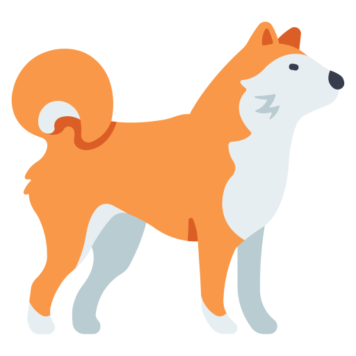

PROJETS
Projet Tidder
L'idée de base était la création d'un forum. Le projet s'est étoffé pour devenir un réseau social à part entière aux allures de Reddit. Création de compte, création de sujet, forum communautaire, upvote, ban, admin, modérateur, barre de recherche. Nous étions 3 pour réaliser ce projet durant 3 mois. Ce fut lus gros projet de l'année. Ce projet nous a permis de passer devant un second jury et de gagner la possibilité de présenter ce projet aux Ydays de l'année prochaine.
Lien Github
Technologies

Projet Red
Le Projet Red nous a forcé à réutiliser notre apprentissage sur un cas concret afin de comprendre et valider les notions que nous avions vu durant le premier module. Grâce au Challenge Go nous avons pu construire une ébauche d’un jeu vidéo. Ce fut la prémière grosse épreuve de l'année et l'une des expériences qui m'a le plus plû.
Lien Github
Technologies

Site Web Nami
Offrir un site internet complet permettant de suivre l'actualité de Nami et d'y retrouver ses photos, déplacements et contenu exclusif à ce site. Il a pour but de renforcer le lien qui pourrait se créer entre la cible du site et l'objet de celui-ci. ainsi que fidéliser et obtenir une proximité avec les visiteurs du site. J'ai adoré créer un site qui avait pour thème mon propre chien. Projet effectué en binome pendant deux mois. Ce fut le premier projet où il a fallut utiliser du JavaScript. Le site web est coloré et possède un design "fun".
Lien Github
Technologies
Hangman Web
Avant de ce lancer sur ce projet, nous avions déjà fait une ébauche d'un jeu "pendu" qui fonctionnait seulement sur le terminal à l'aide du langage Go. Pour aller plus loin, il nous a été demandé cette fois de créer un "réel" jeu sur notre navigateur en l'hébergeant sur notre serveur local. Les réglèes étaient simples, elles reprenaient évidemment toutes les règles du célébre jeu. Il y avait en base de donnée des mots prédéfinis aléatoires à chaque partie ainsi que la sauvegarde de chaque lettre utilisée.
Lien Github
Technologies
Projet Infra
Il a fallu simuler la mise en place d’un SI d’une petite entreprise. Le but était de proposer une architecture comprenant un pare-feu (avec DHCP, DNS, filtrage réseau, routage…), 2 clients (1 windows et 1 linux), 1 serveur linux (sauvegarde) , 1 serveur linux (hébergement site web) Il fallait que l’accès au serveur linux sauvegarde puisse se faire seulement via le réseau interne de la société et l'accès au site web via le réseau internet ou externe. Ce projet a été très compliqué à mettre en place et a demandé beaucoup de recherche personnelle. J'en suis sortie grandit et ai appris beaucoup de compétences.
Lien Github
Technologies